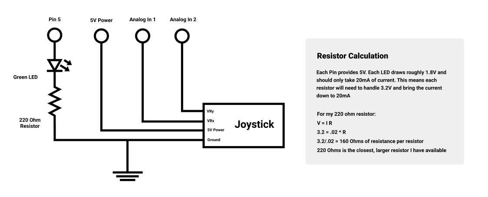
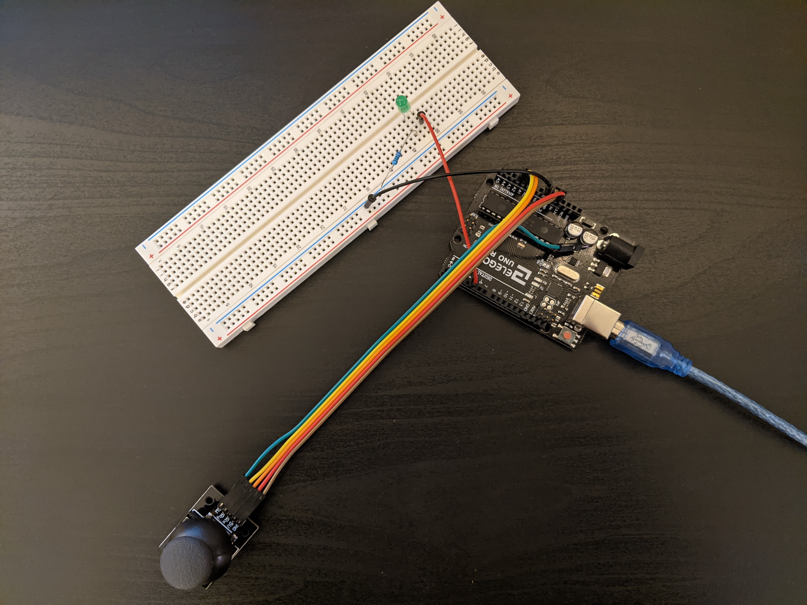
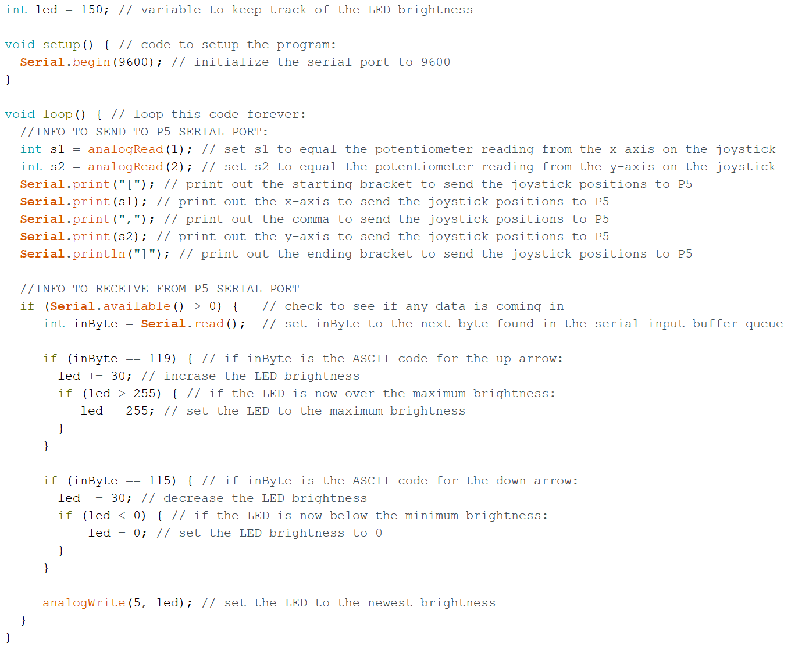
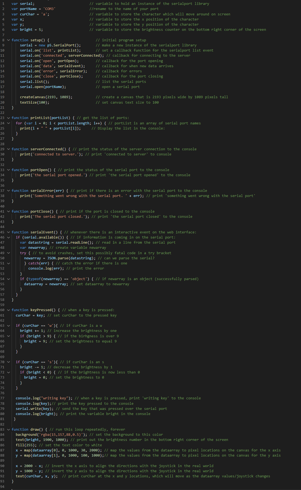

This is the schematic for my circuit. I connected the provided joystick to the Analog In pins on the Arduino, and connected an LED to pin 5.

Here is a picture of my implemented circuit. It is pretty simple since the only things connected are the joystick and the green led. The blue lead coming off
the joystick is not connected to anything, but could allow the button on the joystick to be programmed

This is the code for the circuit, which has two parts. The first part sends the data from the Analog In pins (which are connected to the Joystick) over the
serial port to be interpreted by the P5 javascript code below. The second part recieves the data from the P5 javascript, which is sending the keypresses from the
keyboard. Depending on if a keypress is w or s, the voltage to the LED will increase or decrease.

This is the P5 javascript code that is run on the 'Web Server for Chrome' program. This code sets up the conenction to the serial port and creates a canvas
for the program to draw on. The SerialEvent function reads the joystick data over the serial port, and the keyPressed fucntion reads the input form my keyboard.
In the draw function, the characters and brightnes are being updated over every loop.

Here's the circuit in action! The video is attempting to show a lot of things so it's a bit long, but what's important is that: Whichver key is pressed on the keyboard updates the character on the screen The joystick input will move the character around on the screen If W or S is pressed, it will either increase or decrease the brightness number in the bottom right corner and increase or decrease the LED brightness.